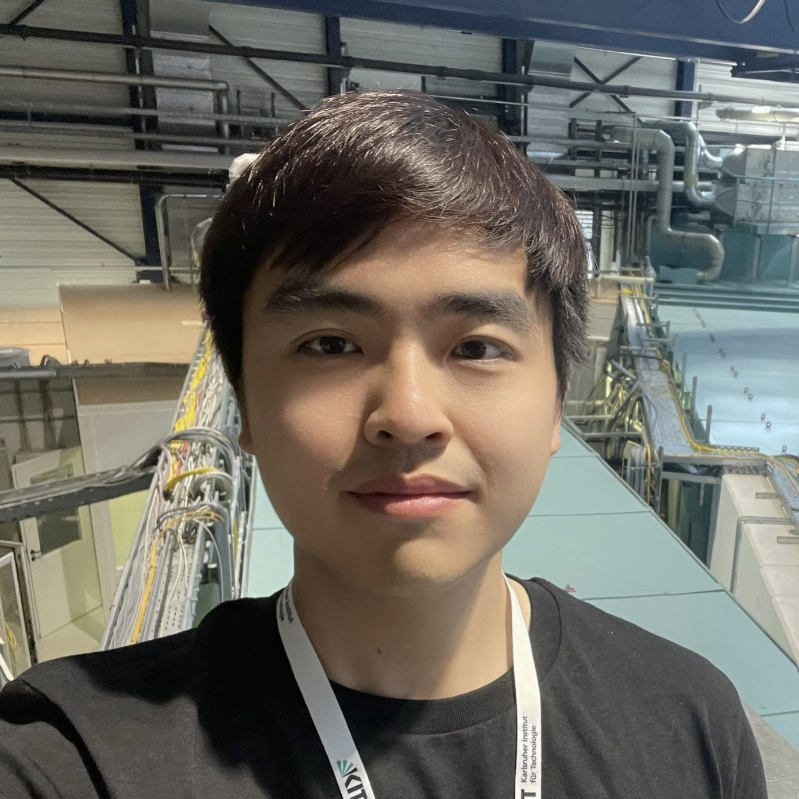

Karlsruhe Institute of Technology (KIT) Simon Hirlaender
University of Salzburg  Chenran Xu
Karlsruhe Institute of Technology (KIT)
 Jan Kaiser
Jan Kaiser Deutsches Elektronen-Synchrotron DESY Sabrina Pochaba
University of Salzburg
| Home | Registration | Program | Directions |
Reinforcement learning (RL) is a powerful learning paradigm of machine learning (ML). It is particularly suited to tackle control problems in large environments, can learn from experience without the need of a model of the dynamics, and can deal with delayed consequences.
Capturing your control problem as a meaningful Markov Decision Process (MDP) is not trivial. Additional challenges arise in the training in terms of stability and evaluation. Other practical aspects include reproducibility, efficiency, implementation, deployment in hardware, or choosing the most suitable algorithm for your problem.
RL applications in particle accelerators are very promising, but have been deployed in real machines only a handful of times. This workshop aims at lowering the barrier in applying RL and making it a more widely used tool.
We will take time for valuable discussions on the topic of RL applied to particle accelerators and to improve our common knowledge. We will also exchange ideas about promising future avenues and help consolidate a community to advance in this area of research in accelerator controls.